2026 Sep

Award
Dean's Scholar
Received the Dean's Scholar distinction for academic performance in the 2025–2026 academic year.
Received the Dean's Scholar distinction for academic performance in the 2025–2026 academic year.
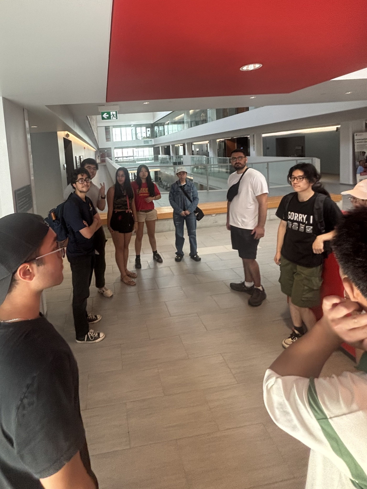
Helped organize and lead a campus tour with fellow QSuccess mentors in early September 2026. Introduced incoming students to campus buildings and classroom locations, and answered questions about university life.
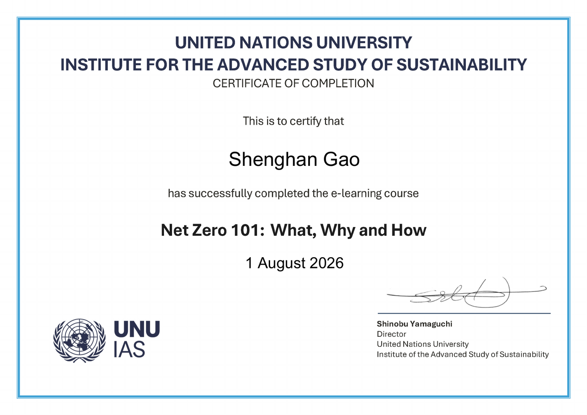
Completed the UNU-IAS e-learning course covering the meaning of net zero, why it matters, and the main approaches used to move from targets to implementation.
View PDF
Designed and built a bilingual company website, organizing product and company information for desktop and mobile visitors.
gaoco.org
Built this bilingual portfolio to share my education, projects, and experience, with layouts for desktop and mobile.
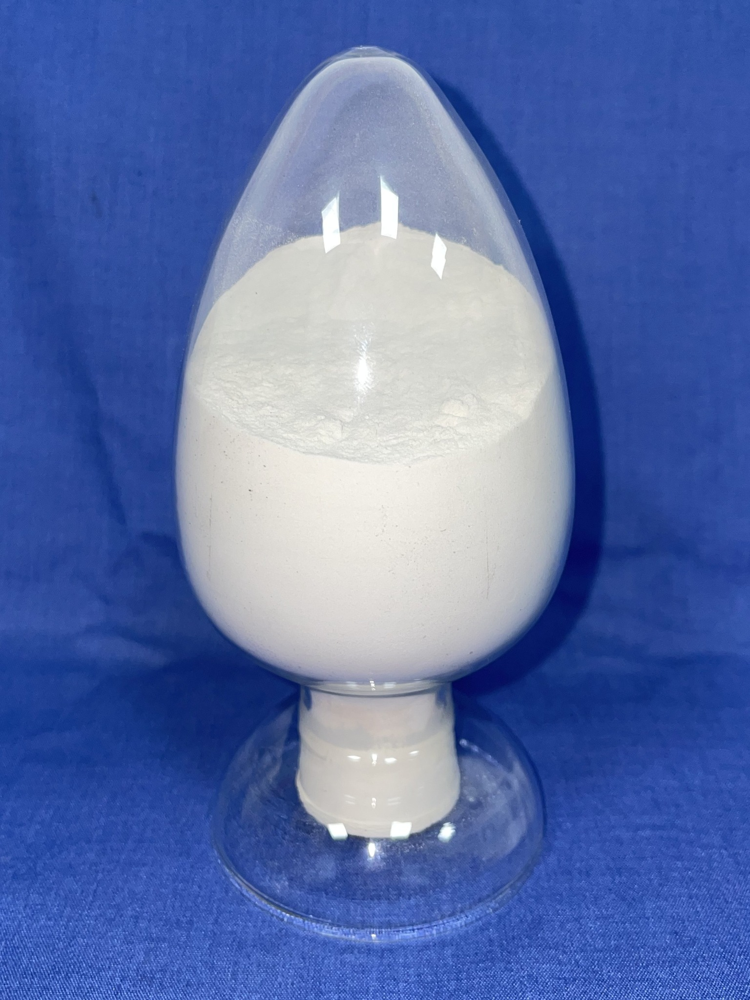
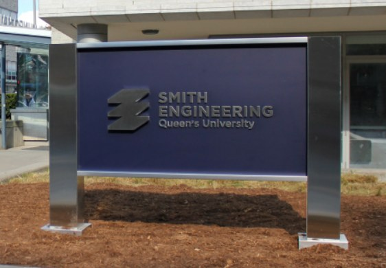
Support incoming international engineering students through the QSuccess Engineering mentorship program. Answer questions about starting university, share campus resources, and follow up as students settle in.
Program page
Completed the center-of-mass, momentum, velocity, and position updates in a provided MATLAB framework, then compared the trajectories and linear momentum of an Earth-and-three-satellite model under different parameter settings.

Built a recycled-material femoral-head indexing mechanism and completed the motor testing, encoder feedback, Arduino/C control, Excel data organization, and Python plotting. I wrote the project code independently.
Received the Dean's Scholar distinction for academic performance in First Year Engineering during the 2024–2025 academic year.
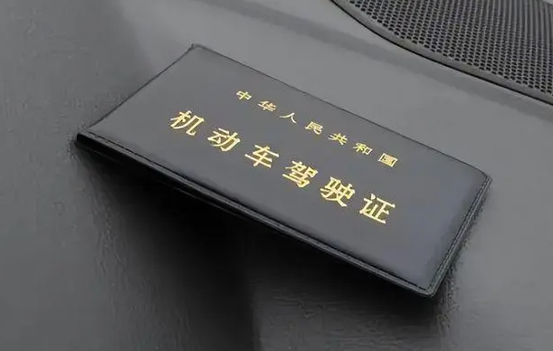
Obtained a Chinese C1 driver's license.

Designed and tested a crab-claw end effector for lunar greenhouse harvesting. I wrote the control code and completed the SolidWorks simulations; a teammate created the CAD model.
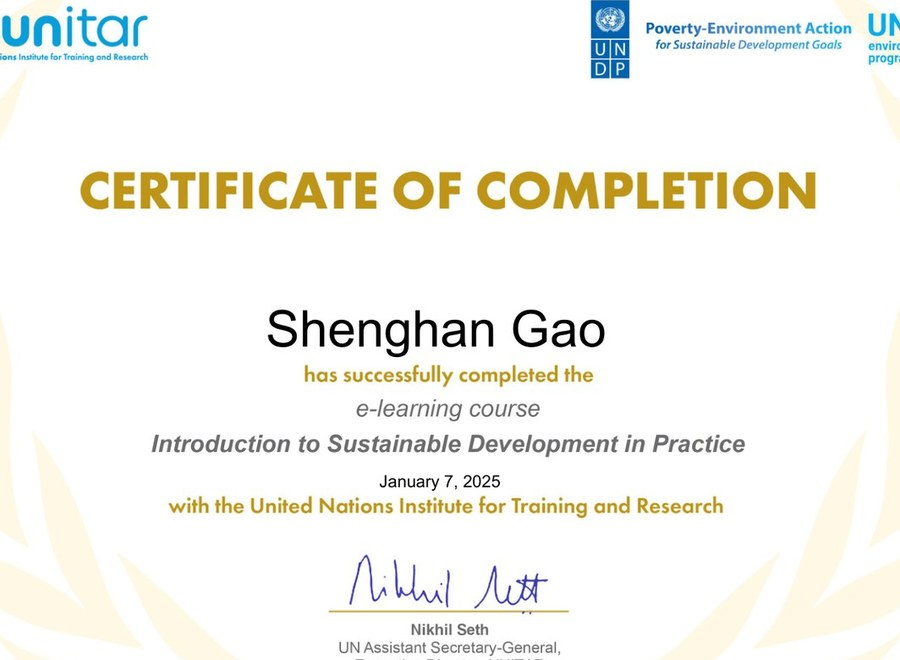
Completed UNITAR's Introduction to Sustainable Development in Practice online course.
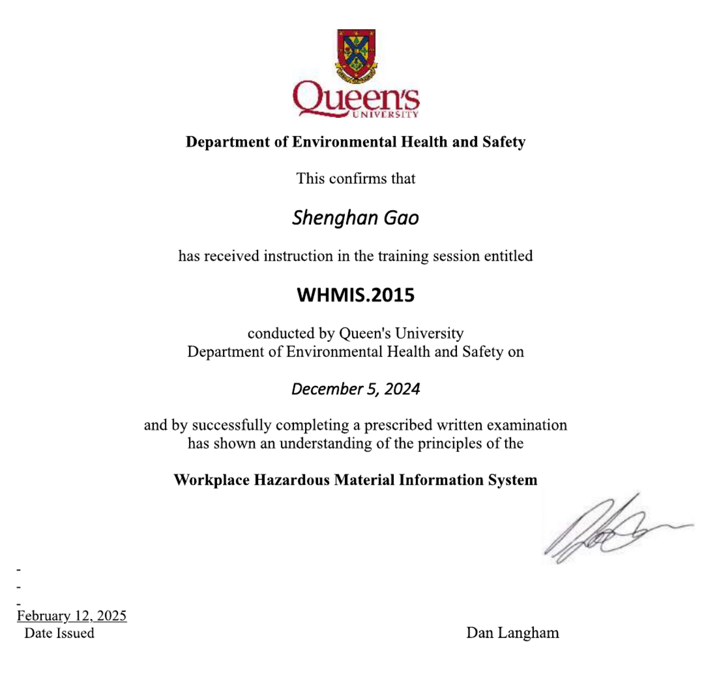
Completed WHMIS 2015 training and the required written assessment covering workplace hazardous materials information and safe-handling principles.
View PDF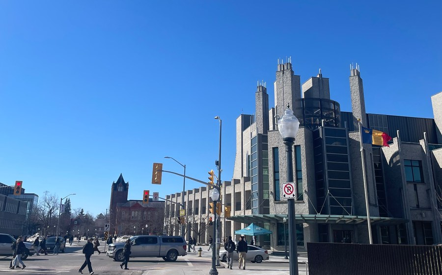
Tutored peers in small groups and one-on-one, explained problems step by step, checked calculations in spreadsheets, and gave feedback on practice work.

Designed and tested a water-treatment prototype with pump-driven flow, alum dosing, magnetic mixing, multi-layer filtration, and clean-water collection. I wrote the control code independently.
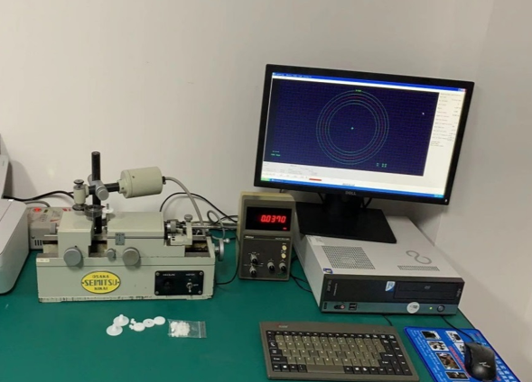
Tutored high school math and physics, explained problem-solving steps, and gave feedback on practice work.
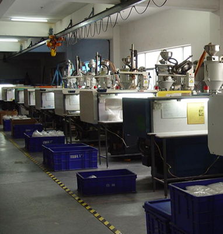
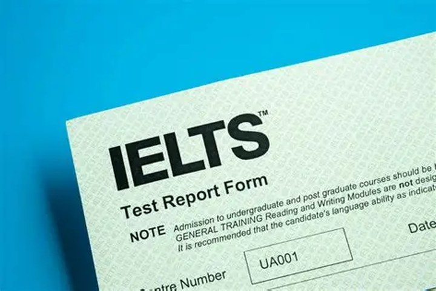
Achieved an overall IELTS score of 7.5.

Received Certificate of Distinction for ranking in the top twenty-five percent of contestants in the Canadian Senior Mathematics Contest.
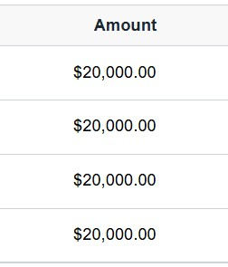
Major entrance scholarship awarded by Queen's University.
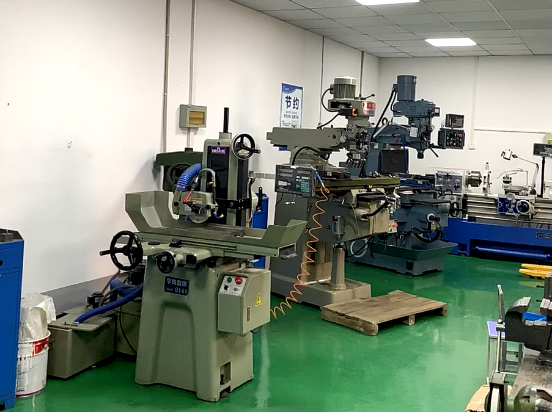

Listed as inventor and patentee for a utility model patent involving a multifunctional cushion capable of heating and cooling.
View PDF
Listed as inventor and patentee for a utility model patent related to a multi-purpose liquid-storage wiping pen.
View PDF